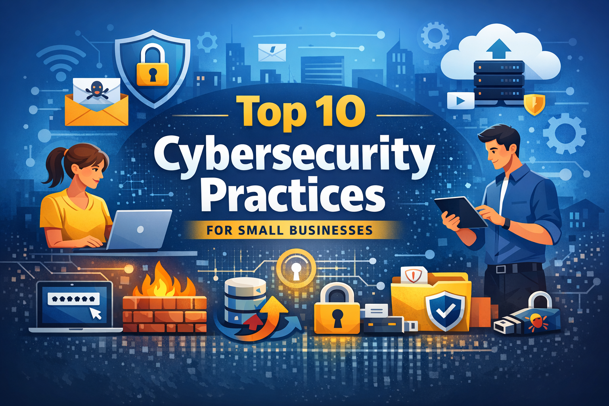

Small businesses are frequent targets for cyberattacks because they often have fewer security controls than large organizations. Applying a few core cybersecurity practices can significantly reduce risks and protect data, systems, and customers.
Require complex passwords that include letters, numbers, and special characters. Avoid password reuse and enforce regular password updates. A password manager can help employees manage secure credentials.
MFA adds an extra layer of security by requiring a second verification method such as a mobile code or authentication app. Even if a password is compromised, MFA helps prevent unauthorized access.
Regularly update operating systems, applications, and firmware. Many cyberattacks exploit known vulnerabilities that already have security patches available.
A firewall monitors and controls incoming and outgoing network traffic. It helps block unauthorized access to internal systems and should be configured properly for both network and endpoints.
Deploy antivirus or endpoint protection solutions on all devices including servers, desktops, and laptops. Ensure automatic updates and regular scanning.
Human error is one of the most common causes of security breaches. Provide regular training on phishing detection, safe browsing habits, and proper handling of sensitive data.
Maintain regular backups of important files and systems. Use the 3-2-1 backup rule: three copies of data, stored on two different media types, with one copy kept offsite or in the cloud.
Apply the principle of least privilege. Employees should only have access to systems and data necessary for their role.
Use strong encryption such as WPA3 or WPA2. Change default router passwords and create separate guest networks for visitors.
Prepare a plan for responding to security incidents such as data breaches or ransomware attacks. The plan should include detection, containment, communication, and recovery steps.